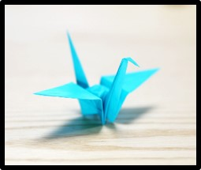

Origami Crane:
Material Required : For this figure, you will need an origami sheet.
Step 1 : The first step is to fold the square diagonally, corner to corner. Repeat the same process again so that it looks like an x on your paper. Make sure that you properly align the edges or else your crane won't fold as well. Make sure it is as perfect as possible.
Step 2 : The second step is to flip the paper over and fold the paper in half horizontally. Repeat this process again so that your paper looks like a + and a x on top of each other. Make sure it is pefect just like with the x. Making sure your folds are aligned perfectly is a key part of this.
Step 3 : Open the square up, keeping the colored side down. Turn the square so that one of the corners is pointing at you. Bring the two side corners in to meet the corner on the table that's pointing at you. Take the top corner that's still sticking up and press it down to join the other corners, creating an accordion folded square.
Step 4 : With the 'flap' corners still facing you, take the top right hand corner of the square and fold it into the center diagonal line of the square. The result of your folds will look a bit like the Superman logo shape. Repeat this with the left top corner.
Step 5 : Once both parts are folded in pull the top part down and press the crease.
Step 6 : After you have both halves of the triangle pulled in pull them back out and lift up the top piece of paper. Next, lift up the top front corner and hold down the other three front corners. Pull the top corner up. It should look look like a frogs mouth. The next part is a bit tricky. Pull the top corner all the up and back so that the top piece lies flat. Carefully press all the folds down so that you end up with a diamond shape on top of the bottom diagonal square. Then flip the paper over and repeat the steps.
Step 7 : Next, fold the right top corner of the diamond in to meet the center line. Press down that fold.
Repeat this for the left top corner.
Flip the paper over and repeat the above steps for the other side. You'll end up with something that looks a bit like a skinny kite shape.
Step 8 : Now, lift up the top right side and press it over to the other side, like turning a page in a book. Press down the middle fold.
Flip the paper over and repeat this in the same direction, right to left, on the other side.
You will end up with a very elongated 'wolf's head' shape.
Step 9 : Lift up the wolf's snout and fold it so it meets with the tips of the ears. Press that new fold down.
Flip the paper over and repeat on the other side.
Step 10 : Like you did in Step 9, fold the right side top layer of the paper in a book fold, from right to left.
Flip the paper over and repeat on the other side.
Step 11 : Next, you pull out the long pieces of paper (the head/neck & tail). Pull them both out so that they line up with the angle of the body fold. (like pictured)
Bend the top of one side down to make the head. Fold both wings down where two different angles meet on the wing flaps. Press the folds.
Step 12 : To finish off the crane and make it able to stand, gently pull the wings apart where they're folded.
Then turn the crane upside down and gently pull the opposite corners apart to finish opening up the body.
You can also try blowing into the hole on the bottom as you pulll out the wings to make sure you're crane's body is puffed out. Be careful to not pull out the wings too much or they'll rip. If the wings rip you will have to restart your crane with a new piece of paper.